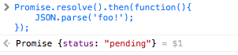
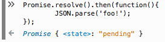
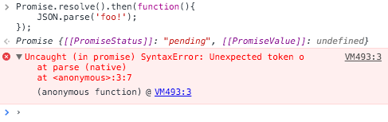

We talk about JavaScript. Each month in Warsaw, Poland.
Daftcode, Warsaw
ECMAScript 2015 == ECMAScript 6 == ES6
// classic JS function
function(param1){
//statements
}
// ES 2015 arrow function
(param1) => {
// statements
}
var variableInFunctionScope;
let variableInBlockScope;
A promise represents the eventual result of an asynchronous operation.
Promises/A+
var promise = sthAsync();
// sthAsync is done?
$.get('ajax/test.html', (data)=>{
console.log(data);
});
let db, request = indexedDB.open('TestDatabase');
request.onsuccess = (evt)=>{
db = request.result;
};
fs.readFile('/etc/hosts', (err, data)=>{
console.log(data);
});
sthAsync((result) => {
console.log(result);
});
let promise = sthAsync();
promise.then((result) => {
console.log(result);
});
// ofc. sthAsync().then(... is ok :)
var promise = sthAsync();
promise.then(
(value)=>{
// inside onFulfilled
},
(reason)=>{
// inside onRejected
});
let myPromise = new Promise((resolve, reject) => {
// do sth sync or async
if(/* there is an error */){
reject(reason);
} else {
resolve(value);
}
});
doA((AValue)=>{
doB((BValue)=>{
doC((CValue)=>{
dpD(()=>{
doE(()=>{
doF(()=>{
doG(()=>{
});
});
});
});
});
});
}); //pyramid of doom
doA() // returns promise
.then((AValue)=>{
// we can do sth with AValue
return doB();
})
.then((BValue)=>{
return doC();
})
.then((CValue)=>{
return doD();
})
.then(()=>{
})
.then(()=>{
});
doA()
.then(doB)
.then(doC)
.then(doD)
.then(doE)
.then(doF);
The Promise Resolution Procedure
then returns a new Promise.
let promise2 = promise1.then(onFulfilled, onRejected)
// promise1.catch(onRejected)
If onFulfilled or onRejected returns a value (or undefined),
promise2 is fulfilled with the value.
let promise2 = promise1.then((promise1Value)=>{
return 'foo!';
});
The Promise Resolution Procedure
then returns a new Promise.
let promise2 = promise1.then(onFulfilled, onRejected)
// promise1.catch(onRejected)
If onFulfilled or onRejected returns another promise (or thenable),
promise2 behave like the returned one.
let promise2 = promise1.then((promise1Value)=>{
let thenable = $.get('foo.html');
return thenable;
});
The Promise Resolution Procedure
then returns a new Promise.
let promise2 = promise1.then(onFulfilled, onRejected)
// promise1.catch(onRejected)
If onFulfilled or onRejected throws an exception,
promise2 is rejected with the exception.
let promise2 = promise1.then((promise1Value)=>{
throw new Error('foo!');
});
The Promise Resolution Procedure
then returns a new Promise.
let promise2 = promise1.then(onFulfilled, onRejected)
// promise1.catch(onRejected)
If onFulfilled is not a function and promise1 is fulfilled,
promise2 is fulfilled with the same value.
let promise2 = promise1.then();
The Promise Resolution Procedure
then returns a new Promise.
let promise2 = promise1.then(onFulfilled, onRejected)
// promise1.catch(onRejected)
If onRejected is not a function and promise1 is rejected,
promise2 is rejected with the same reason.
let promise2 = promise1.then();
doA().then(() => {
doB.then(() => {
doC.then(() => {
doD.then(() => {
});
});
});
});
doA().then(() => {
return doB();
}).then(() => {
return doC();
}).then(() => {
return doD();
});
getUser(userId).then((user)=>{
return getUserPosts(user).then((userPosts)=>{
// here you can use both user and userPosts
});
});
Promise.resolve().then(()=>{
JSON.parse('foo!');
});
| Safari |  |
| Firefox |  |
| Chrome |  |
Promise.resolve().then(()=>{
JSON.parse('foo!');
}).catch((reason)=>{
console.log('There is an error:', reason);
});
somePromise().then(()=>{
someOtherPromise();
}).then(()=>{
// someOtherPromise() is not resolved yet!
});
somePromise().then(()=>{
return someOtherPromise();
}).then(()=>{
// someOtherPromise() is now resolved :D
});
jQueryPromise
.then(function(){
throw new Error('JQuery - catch me if you can!');
})
.then(null, function(reason){
// you can't ;(
});
$.Deferred in jQuery >= 3 implements Promises/A+ standard.
read this blog post.
setTimeout(()=>{
console.log('1.');
setTimeout(()=>{
console.log('2.');
setTimeout(()=>{
console.log('3.');
setTimeout(()=>{
console.log('4.');
}, delayT);
}, delayT);
}, delayT);
}, delayT);
function delay(t){
return function(value){
return new Promise((resolve)=>{
setTimeout(()=>{
resolve(value);
}, t);
});
}
}
let promiseFactory300ms = delay(300);
let promise = promiseFactory300ms('foo');
let mDelayFunc = delay(delayT);
Promise.resolve().then(()=>{
console.log('1.');
return 'foo!';
})
.then(mDelayFunc)
.then((gotFoo)=>{
console.log('2.', gotFoo);
})
.then(mDelayFunc)
.then(()=>{
console.log('3.');
});
let _cache = {};
function load(names){
let promises = _.map(names, (name)=>{
if(!_.has(_cache, name)){
_cache[name] = get(name).then(_.template);
}
return _cache[name];
});
return Promise.all(promises);
}
async function loadSth(){
try {
let data = await getJSON('someData.json');
return data;
} catch (err) {
// ---
}
}
something_ok()
.then((v)=>{
return somethingElse_ok(v);
})
.then((v)=>{
fooOne_err(v);
})
.then( something_ok, somethingElse_ok )
.then( anotherOne_err() )
.then( something_ok, somethingElse_ok);
something_ok()
.then((v)=>{
return somethingElse_ok(v);
})
.then((v)=>{
fooOne_err(v);
})
.then( something_ok, somethingElse_ok )
.then( anotherOne_err() )
.then( something_ok, somethingElse_ok);